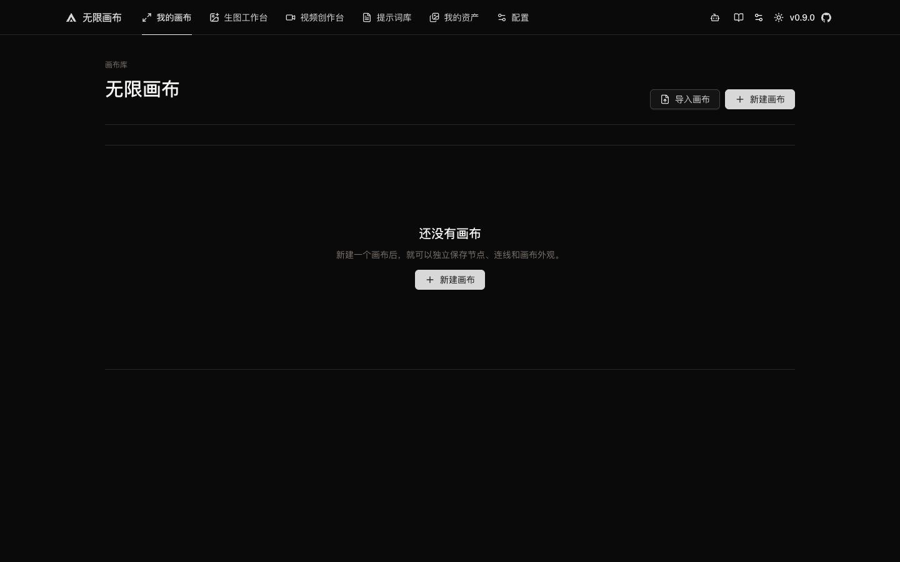
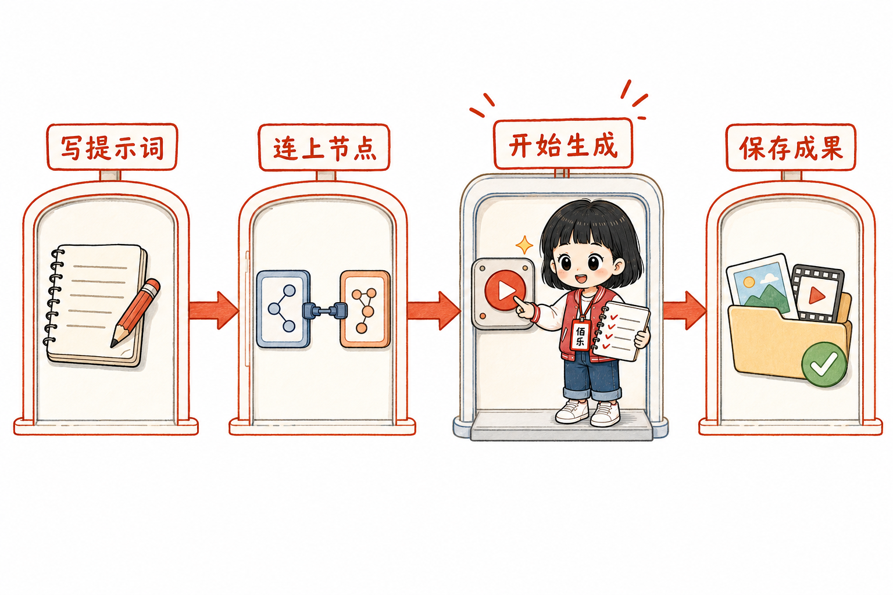
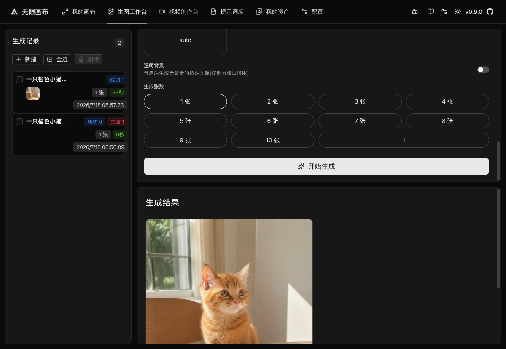
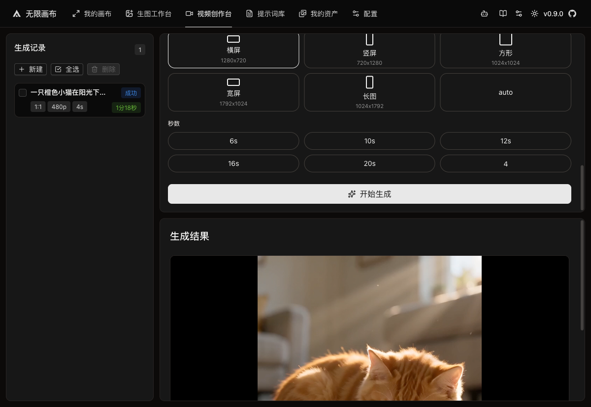
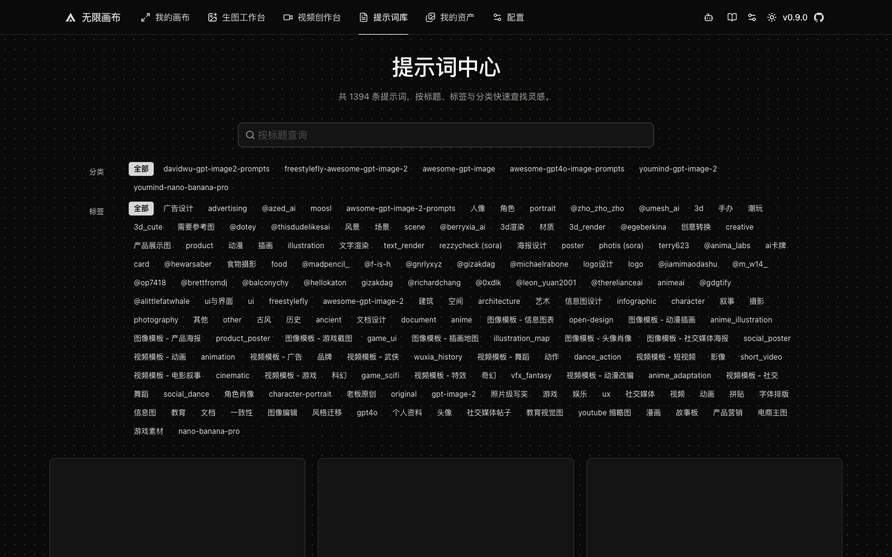
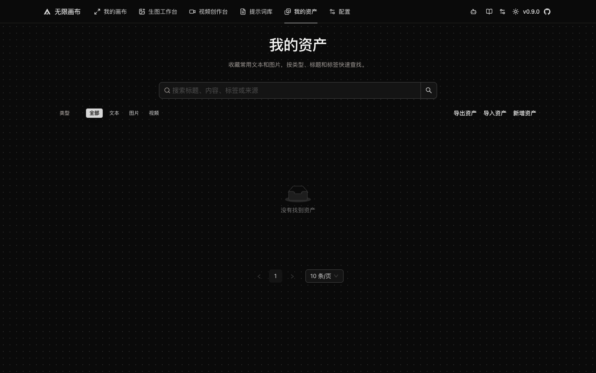
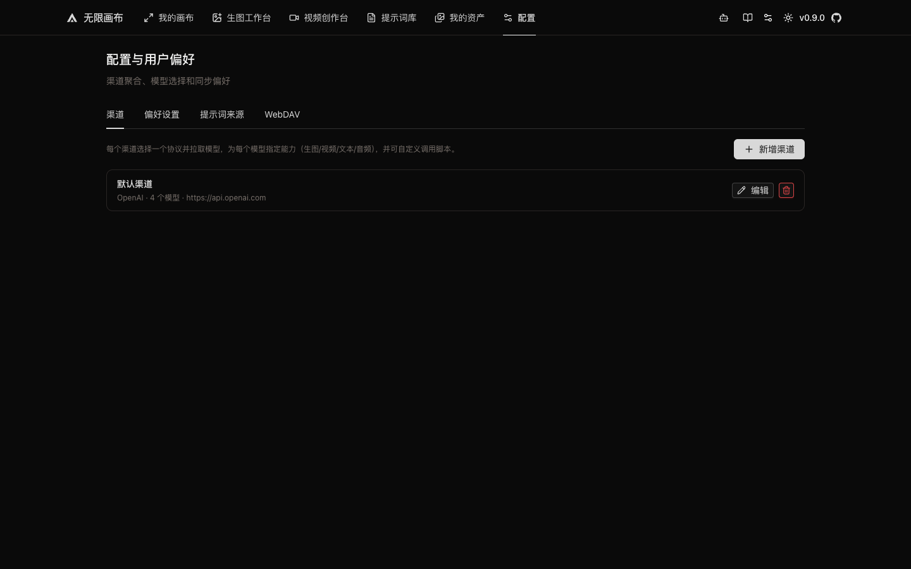

① 新建 / 导入 ② 项目列表我的画布
多素材连接、对比和连续推演。
这是一份给第一次使用者的实操说明书。跟着佰小乐走一遍，你会完成一个最小闭环：打开工具 → 写提示词 → 生成图片或视频 → 下载与同步。

把 Infinite Canvas 想成一张不会用完的工作桌：提示词是便签，图片和视频是素材卡，线条表示它们之间的关系。
无限大的工作桌。你可以缩放、拖动并摆放多个任务。
桌上的一张卡片。文字、图片、视频都是不同节点。
素材之间的“传送带”，告诉系统谁给谁提供输入。
连接模型服务的账号与地址，像选择哪家快递公司。
真正干活的 AI。图片与视频要选各自对应的模型。
资产是成果仓库；同步是把仓库副本保存到 NAS。
顶部导航不是六套互不相关的工具，而是一条完整生产线：配置负责接通模型，工作台负责生产，画布负责组合，提示词和资产负责积累。

① 六个主面板 ② 辅助工具
① 新建 / 导入 ② 项目列表多素材连接、对比和连续推演。
输入提示词，快速得到图片。

① 任务记录 ② 480p · 4秒 ③ 视频预览先用 480p / 4 秒验证镜头。

① 搜索 ② 分类 / 标签 ③ 提示词卡片搜索、复制并收藏成熟提示词。

① 搜索资产 ② 类型筛选 ③ 导入 / 导出 ④ 成果列表把好结果存成可搜索的素材库。

① 四类设置 ② 渠道列表 ③ 新增渠道模型渠道、偏好和 WebDAV；截图不含密钥。
先确认整条生产线通了，再做参考图、视频或复杂工作流。这样出错时最容易找到是哪一站的问题。
双击项目里的 start-local.command。终端窗口要保持打开，然后浏览器访问 http://localhost:3000。
进入“配置 → 渠道”，确认图片渠道已存在，模型为 gpt-image-2。如果今天已经配置成功，不需要再次填写密钥。
gpt-image-2。打开“生图工作台”，输入一句清楚的提示词，例如“阳光下坐在木桌旁的一只橙色小猫”。先选 1 张、常规比例，再点“开始生成”。
在结果卡片点“下载”保存原图；需要继续创作时点“添加到…”或“加入参考”。不要只看页面里的预览尺寸。
今天的图片链路已经实测成功。最稳的原则是：先单图、再加参考；先看真实文件、再谈分辨率。
视频像打样：先花最少成本确认动作、画面和接口都正确，再决定是否制作更长、更高质量的版本。
| 模型 | doubao-seedance-2-0-mini-260615 |
| 清晰度 | 480p |
| 时长 | 4 秒 |
| 画幅 | 按用途选横屏或竖屏；首次测试可不加参考图 |
| 音频 | 首次关闭，减少变量 |
双击空白处或使用添加入口，创建文字节点，写下你的提示词。节点标题尽量用“用途 + 版本”，例如“橙猫主视觉 V1”。
从文字节点的连接点拖线到生成配置节点。连线就像传送带：上游内容会成为下游生成的输入。
图片选择 gpt-image-2；视频先选择 Seedance，并坚持 480p / 4 秒测试线。
生成完成后先打开“信息”查看状态与错误详情，再把满意结果收入资产。一个画布只放同一主题，后续更容易找。
WebDAV 像一根连接浏览器与 NAS 的网线。它同步画布、资产、生成记录和媒体文件，但不会同步 AI API Key。
| 输入项 | 填写内容 | 注意 |
|---|---|---|
| WebDAV 地址 | http://192.168.1.44:5005 | 本机要和 NAS 在可访问的网络内。 |
| 远程目录 | home/infinite-canvas | 保持固定，避免多个目录分散。 |
| 用户名 | 填写 NAS 用户名 | 只保存在当前浏览器本地。 |
| 密码 / 应用密码 | 填写 NAS 密码 | 不要写进代码、截图或 Git。 |
只有出现连接成功，才说明地址、账户和浏览器代理链路都能访问。
同步后在 NAS 对应目录应看到业务目录、manifest.json 和 files/。测试连接成功不等于文件已经同步。
确认启动终端仍然打开，再访问 http://localhost:3000。如果 3000 端口被占用，先关闭重复启动的服务窗口，再只启动一次。
部分中转不提供标准模型列表接口。进入“选择模型”，手动输入准确模型 ID 后添加并保存，不需要一直点击“拉取模型列表”。
先用纯文字、1 张、普通比例测试。如果纯文字成功而参考图失败，再检查参考图是否上传完成、是否使用对应的图片编辑能力。一次只增加一个变量。
退回已验收组合：Seedance 2.0 Mini、480p、4 秒、关闭音频、无参考图。仍失败时打开节点“信息 → JSON”，保留 errorDetails 作为排查证据。
这是上游模型或中转服务没有按请求返回目标像素，不是浏览器预览缩小造成的。以下载原图的像素、文件大小和服务使用记录为准。
“测试连接”只证明能通信；还要点击“立即同步”，并检查远程目录下是否出现 manifest.json 与 files/。
| 词汇 | 作用 | 生活类比与注意 |
|---|---|---|
| 本机服务 | 让你的电脑运行 Infinite Canvas 网页。 | 像在家里开一家只服务自己的小店；终端关掉，小店就打烊。 |
| localhost | 指向当前这台电脑。 | 像写给快递员的“送到我家”；别人电脑访问同一个地址不会进到你的电脑。 |
| API | 网页向模型服务提交任务的接口。 | 像餐厅点单窗口：你提交菜名和要求，后厨返回成品或报错。 |
| API Key | 证明你有权调用模型并承担费用。 | 像银行卡密码；不要放进代码、Git 或公开截图。 |
| 模型 ID | 指定由哪一个 AI 模型完成任务。 | 像点单时写清厨师名字；少一个字符都可能找错人。 |
| HTTP 400 | 服务认为请求参数不符合要求。 | 像订单格式不对被退回；先减少参数，一项一项加回去。 |
| WebDAV | 让浏览器按文件方式读写 NAS。 | 像一扇远程仓库门；能开门不代表货已经搬进去，还要执行同步。 |
| Git | 记录代码与文档的版本变化。 | 像项目的时间机器；密钥和密码不能被它记录。 |